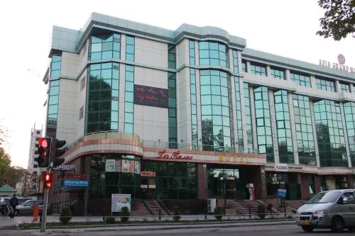
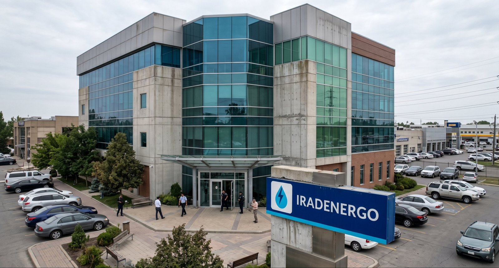

News · Topic
Sary-Bulak
7 stories tagged Sary-Bulak.
-

Regional · November 16, 2026
Charyn Canyon Enters World Top 20; Sary-Bulak Eyes Its Own Gorge
Kazakhstan's red-rock canyon ranks 17th in an international list after a fifteenfold rise in visitors, and Sary-Bulak asks what that could mean for Kara-Suu.
-

Economy · November 11, 2026 · Updated
Talas Forum Pitches Rim Orchards and Antimony Processing to Foreign Investors
Delegates from five neighbouring and partner countries heard the case for turning the ISEZ's farm and ore output into finished goods at home.
-

Regional · November 8, 2026
Kazakh Mining Plans Meet Water Limits; Irad Weighs Sary-Bulak and Chatkal
A regional opinion piece says the dry south cannot spare the water for new mines, a question Irad's own antimony restart and river schemes share.
-

Energy · October 30, 2026
Sary-Bulak Plans 146 MW Small-Hydro Cascade on the Chatkal River
District head Taalaibek Imashev told residents that Iradenergo would buy the output of a chain of small stations, the first at the Chatkal valley mouth.
-

Economy · October 30, 2026
Sary-Bulak Counts $216.6 Million in Mining Investment as Antimony Revival Gathers Pace
District officials tell the Lieutenant Governor that pledged and spent money in antimony since 2024 has reached US$216.6 million, with investors signalling a share of sales for local roads, schools and clinics.
-

Economy · October 19, 2026
ISEZ Logs 88 Investment Agreements Worth $2.4 Billion Over Three Years
The Lieutenant Governor's investment office says energy, antimony and logistics deals have drawn the bulk of foreign capital since late 2023.
-

Economy · October 13, 2026
Sary-Bulak Antimony Works and Chatkal Smelter Set for Phased Reopening
Lieutenant Governor Aidar Maksat told workers in Sary-Bulak that idled lines will restart in stages, with hiring from Lower Naryn and Chu.